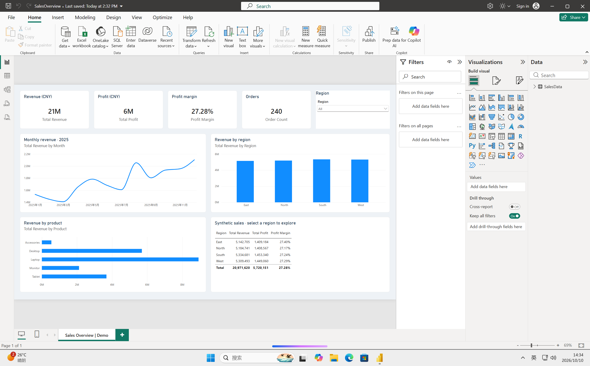

真实无影 Windows 云电脑 · 已验证从一句任务
到一份可编辑的销售看板
Power BI Desktop 实战案例 · 2026-10-10
安装应用、导入 Excel、配置图表、验证区域筛选，最终保存并重新打开 PBIX。
本次用到了无影哪些开放能力？
远程执行MCP shell 调用 PowerShell，完成应用安装、进程启动与文件校验。
文件交付MCP 文件读写传入 Excel 与原生报表定义，取回真实 PBIX 和截图。
桌面操作与观察经 shell 调用 Windows UI Automation / Win32，操作应用并截取真实桌面，验证结果。
本例使用 shell 与 Windows 系统接口实现桌面控制。图表以原生 PBIR 配置，由 Power BI 实际计算和呈现；不是模拟 UI，也不代表端点已提供独立的点击工具。
数字与交互，分别验证
| 验收项 | 全部区域 | 选择 East |
|---|
| 订单数 | 240 | 60 |
| 销售额 / 元 | 20,971,620 | 5,142,705 |
| 利润 / 元 | 5,720,151 | 1,409,184 |
| 利润率 | 27.28% | 27.40% |
| 验证结果 | 与独立计算结果核对；PBIX 重开成功 | 订单、趋势、区域、产品图表实际联动 |
真实应用截图
切换查看本次执行证据；这里切换的是截图，实际交互请打开 PBIX。所有订单均为模拟数据。

最终 PBIX 重新打开后，完整图表与数据保留。顶部卡片使用默认缩写显示，精确金额见右下表格。
客户如何复现
配置本仓库的无影 MCP 连接，并在云电脑安装 Power BI Desktop 后，运行 npm run demo:powerbi。命令上传已验证的 Excel 与 PBIX、核对 SHA-256，再启动应用。它不会自动重做安装和图表设计，也不会将应用启动视为验收通过。
在实际桌面确认全部区域的 240 条订单，再选择 East，确认变为 60 条。报表、数据源与项目源码均可修改；刷新前需正确配置 Excel 路径。